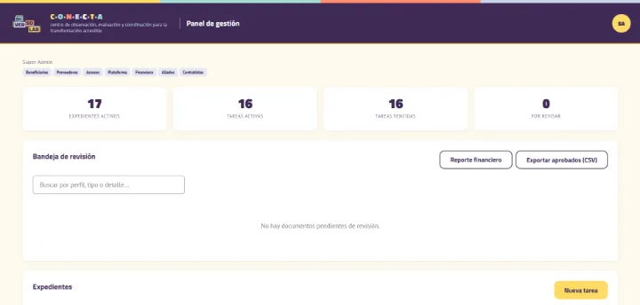
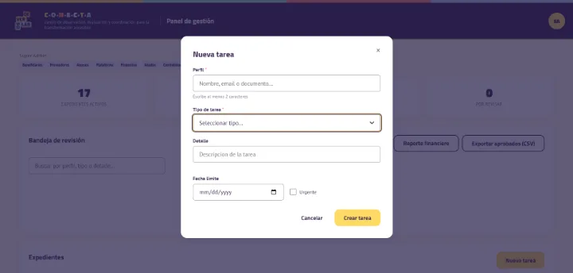
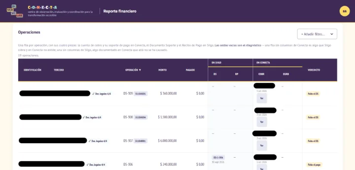
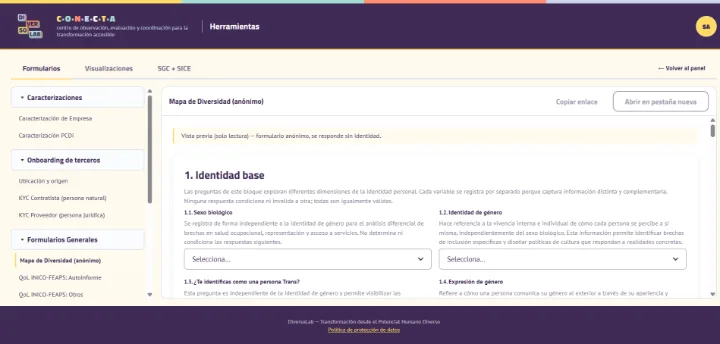
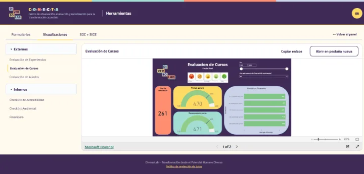
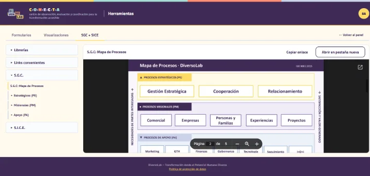
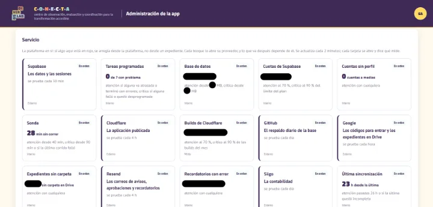

CONECTA
DiversoLAB's digital case-file system.
One case file for every beneficiary, partner company, contractor and supplier: their data, consents, due diligence, documents, tasks, invoices and payments, with its own Google Drive folder and a history of every change.
- Status
- In production
- Period
- Jan 2026 – present
- Role
- Technology & Governance Consultant
- Organization
- DiversoLAB
What it is
DiversoLAB is a Colombian organization that works with people with disabilities, partner companies, contractors and suppliers. CONECTA is the system where it keeps a case file for each of those people and organizations: who they are, what they authorized, which documents they provided and which are missing, what is pending, and what they are owed or have been paid. I designed and built it as DiversoLAB's Technology & Governance Consultant.
Four types of case file
| Case file | Who it is | What is managed |
|---|---|---|
| Beneficiary | A person with a disability served by the programs | Address, background and a profile of their conditions (health data, with restricted access) |
| Partner | Partner company | Tax identification and tax profile, due diligence, company profile and the diversity assessment |
| Contractor | A person who provides services | Tax profile, social security, payment details, due diligence and invoices |
| Supplier | Supplier company | Tax identification and tax profile, payment details, due diligence and invoices |
- The same person can hold several case files, one per type, under a single login, and switch between them from the header.
- A company's legal representative, finance contact and authorized users are linked to its case file.
Who uses it and what each one sees
- Case-file holder. Sees only their own file: tasks, documents, invoices, consents and profiles. They answer forms and upload documents and invoices. They can edit only their contact details; type, status and identity cannot be changed by them.
- DiversoLAB team. There are no fixed roles, but 7 permissions that combine: one per case-file type, access, finance and platform. Two presets build them: Administrator (all) and Analyst (the four by type).
- Analyst or manager of a type: sees and manages those case files, and creates, edits and cancels their tasks.
- Health data and profiles: only the analyst assigned to that case file, the holder and the platform administration; the per-type permission is not enough.
- Access: approves or rejects sign-ups, creates members (corporate email only) and assigns permissions and analysts.
- Finance: reviews due-diligence documents and invoices, reads the financial report and maintains the chart of accounts.
- Platform: manages questionnaires, playbooks and resources, and is the only role that reads the activity log.
- Diversity-assessment respondents: anonymous, with no account.
What a case file contains
- Identity: name or legal name, ID document with its format validated, contact details and status.
- Consents: the data-processing authorizations the holder gives at sign-up, some required and some optional, and, for contractors and suppliers, the authorization for their tax and financial data at onboarding. Each one is stored with its version, a record number and a verifiable fingerprint.
- Due diligence: address, tax and payment details, social security and AML/CTF due diligence. The questionnaires are versioned and every submission gets a record number.
- Profiles: a company profile for partners and a conditions profile for beneficiaries.
- Documents: identity, tax, banking and company-registration documents, invoices, social-security proof, bank receipts for money in and out, and consent certificates. The system works out which document each case file is missing and the status of the last one submitted.
- Tasks: form, document, finance, review, consent and assessment, with priority, due date, dependencies and recurrence.
- Invoices and payments: invoices or bills with their ledger account, and the bank inflows and outflows that settle them.
- History: activity log, versions of every answer, replaced documents and correction chains. Nothing is deleted silently.
How a case file moves forward
Sign-up
A 3-step wizard: case-file type; individual or company details; and the data policy with the consents, confirmed with a code sent by email. The case file (pending) and its consents are created in a single operation; the PDF certificate goes to Drive and arrives by email, and the team is notified on Telegram.
Approval
A member with the access permission decides. If approved, the case file becomes active, its Drive folder is created, the holder gets an email and the onboarding tasks for its type are created. If rejected, the case file becomes inactive and the holder gets an email.
Onboarding
Each type of case file gets its own set of onboarding tasks (the forms, documents and due-diligence steps it needs), each with a due date.
Forms
When one is submitted, the system checks every answer against the allowed values, confirms that attachments belong to that holder and that task, enforces dependencies, prevents double submission, assigns the record number, stores the version and closes the task.
Documents
Only valid file types are accepted, every file is checked by its actual content, and time-sensitive documents must be recent. Each upload waits in temporary storage and is reviewed from a single inbox. Approved, it is filed in the case file's Google Drive folder with a standard name. Rejected, a reason is required and the file is purged from temporary storage, so it never reaches Google Drive; the task goes back to the holder with a deadline to respond, and they are notified by email.
Follow-up
Every day overdue tasks are flagged and recurring ones are generated. Email reminders are limited and grouped into a single email per person; after the last one, the requirement is marked "No response" for the team.
Statuses
- Case file: pending, active, inactive or suspended.
- Task: pending, in progress, completed, returned, overdue or cancelled.
- Document: pending, approved or rejected.
- Invoice: uploaded, approved, rejected, paid or closed. Invoices are never deleted: they are kept for at least 5 years.
Payments to contractors and suppliers
The third party uploads an invoice
Only with current due diligence. They upload their invoice and choose the ledger account; the suggested number follows the accounting system's series and cannot be repeated.
Finance review
If approved, it is filed in the case file's finance folder. If rejected, it carries a reason and opens a correction requirement linked to the original.
Proof of payment
A team member reports it from the Telegram bot. If they hold the finance permission, the invoice moves to paid.
Matching with the accounting system
Every night the accounting records and payment receipts are read from the accounting system, without writing anything to it. Each record is matched to its invoice, and ambiguous matches are never assigned automatically.
Automatic closing
A paid invoice is closed when the accounting system no longer shows it as an account payable. Closing stops if the data arrived incomplete.
Reconciliation in plain view
Every transaction is checked in 4 pieces (the invoice, the proof of payment and the two matching accounting records) and gets a verdict, such as complete, missing a piece or mismatch. The financial report matches the accounting system's accounts payable against CONECTA and lists what still needs to be recorded. It only informs; it does not block payments.
Diversity assessment (anonymous)
Campaign
The team opens a campaign for a partner or supplier company, which gets a task to share a public link and confirms when it has done so.
Answers without identity
People answer a short questionnaire without an account. Only the campaign and the answers are stored: no name, email or IP address.
Aggregated report
Results are aggregated by dimension and small groups are hidden so that no one can be identified (k-anonymity), with the threshold fixed on the server. Only the team closes the campaign, and the partner's company profile complements the assessment.
Screens
- Public: home page; sign-in with a one-time code; sign-up; and the assessment questionnaire, with no account.
- For the holder: My case file (to-do, notices, documents, invoices and transactions); My tasks; Form, with automatic drafts and read-only once submitted; and My account (contact details, ID document and consents given).
- For the team: Dashboard (indicators, review inbox for documents and invoices, case files and new task); Case file, the full view of a holder; Access (approvals, assignments and permission matrix); Financial report; Administration (activity, service status, log, questionnaires, playbooks and chart of accounts); and Tools, the organization's internal links.
Operations: bots and notifications
| Trigger | Message | Who receives it | What for |
|---|---|---|---|
| New document, invoice, sign-up or review task | "Document to review", "Invoice to review", "New sign-up to approve" or "Review task", with a direct link | Alerts bot, team chat | Review or approve without searching |
| An account signs in from another network while another session is open | "Simultaneous session from another network", with device and browser | Alerts bot | Suspend the account from Access if it was not the holder |
| Every morning, if anything is pending | Pending queues with the age of the oldest item, people with no response, scheduled jobs with problems and failing services | Alerts bot | Prioritize the day |
| A team member messages the bot | Verification with a short-lived code sent to their work email, with limited attempts; then a guided entry of the inflow or outflow with its proof | Capture bot | Record the payment with its proof in Drive |
| Approval, rejection, returned document, consent given or pending requirement | Email with the outcome, the reason and the deadline, the PDF certificate or the reminder | Holder | Know what happened and what is missing |
- No notification includes an ID number, tax ID, email or IP address.
- Scheduled jobs handle due dates and recurring tasks, reminders, the nightly accounting sync and invoice closing, the daily summary, session expiry, cleanup of temporary files and a daily database backup.
- Health probe: regularly checks every external service, and signs in with a test account that has no permissions to verify it can see only its own case file.
- Scheduled-job trail: the system flags any job that did not run, failed or is not being watched.
Controls
- Access: every rule lives in the database and the server functions repeat the same rule. Critical writes (consents, documents, invoices, transactions and the log) are made only by the server.
- Sensitive data: health data only with a named assignment; the diversity assessment is anonymous; notifications carry no identifiers; the financial report is for the finance role only.
- Consents: cannot be edited or deleted; they carry a sequential record number and a SHA-256 fingerprint that a third party can recompute. The PDF certificate shows the fingerprint on every page with the policy attached. What is mandatory is decided by the server, not by the form.
- Traceability: activity log, versions of every answer, replacement and correction chains, sign-in records, and a record of every automatic change to an invoice.
- Files: the browser never touches storage; every file is validated by its content and waits in temporary storage until it is reviewed; a rejected file is purged there and never reaches Google Drive, and leftover temporary copies are cleaned weekly; files are served only after the permission is checked.
- Sessions: closed after a period of inactivity.
- Change control: automated checks on every change, which also compare the documentation, the access matrix and the diagram with the code; end-to-end tests with accessibility checks; a bench that compares every function before and after a change against simulated services; and everything goes in through a branch and a review.
Integrations
- Google Drive: case-file folders, certificates, archive and proofs.
- Google Docs: data policy and combined consent.
- Accounting system: read-only.
- Resend: emails.
- Google Workspace: sign-in codes.
- Telegram: the 2 bots.
- Cloudflare Pages: website.
- GitHub Actions: automated checks and backup.
Screenshots
Tap an image to see it full size. The app screens are in Spanish.

Management dashboard: active case files, tasks and the review queue. 
New task on a case file, with a due date and urgency. 
Financial report: each transaction with its pieces and its verdict; third parties are hidden. 
Forms: preview of the Diversity Map, which is answered anonymously. 
Visualizations: course evaluation results, from the public management report. 
Management system: the organization’s process map. 
Administration: the status of each service, the probe and the accounting sync.


Infrastructure diagram
Interactive diagram generated from the project’s code. Tap a node to see its details and connections.
Technical details
Stack
- HTML/CSS/JavaScript, no framework
- Supabase (PostgreSQL, Auth, Storage)
- pg_cron + pg_net
- Edge Functions (Deno/TypeScript)
- pdf-lib
- Google Drive API
- Accounting system API (read-only)
- Resend
- Telegram Bot API
- Cloudflare Pages
- Playwright + axe
- GitHub Actions
Figures
- 37 tables, all with access policies (83 policies); 52 SQL functions and 24 triggers.
- 16 Edge Functions with 22 shared modules; 8 scheduled jobs plus the backup; 3 private staging buckets.
- 11 versioned questionnaires and 4 playbooks; 14 pages.
Operational details
- Files: PDF, JPEG or PNG up to 10 MB; password-protected PDFs are rejected; the tax registration must be less than 30 days old.
- Deadlines: a returned document has 5 days for a response; at most 2 reminders per requirement; recurrence monthly, quarterly, half-yearly, yearly or every N days.
- Scheduled jobs (Bogotá time): due dates 06:00; reminders weekdays 08:00; accounting sync 01:20; invoice closing 02:00; daily summary 07:30; session expiry hourly; temporary-file cleanup on Sundays; daily backup kept for 30 days.
- Capture bot: 6-digit code valid for 10 minutes, 5 attempts, 12-hour session.
- Health probe: every 30 minutes, 12 checks across 7 services.
- Diversity assessment: 40 questions; categories with fewer than 5 answers are hidden.
- Sessions: closed after 8 hours of inactivity; sign-in records kept for 90 days.
- Change control: 24 automated checks, 156 end-to-end tests and a bench of about 182 scenarios.
How I build: I define the problem, the requirements, the data model and the controls; I implement with AI coding assistants (Claude Code) under my direction, and every change passes automated tests and my review before release.
The source code is private because it contains the client’s business rules and data. I can walk through it live: code, tests and deployment.